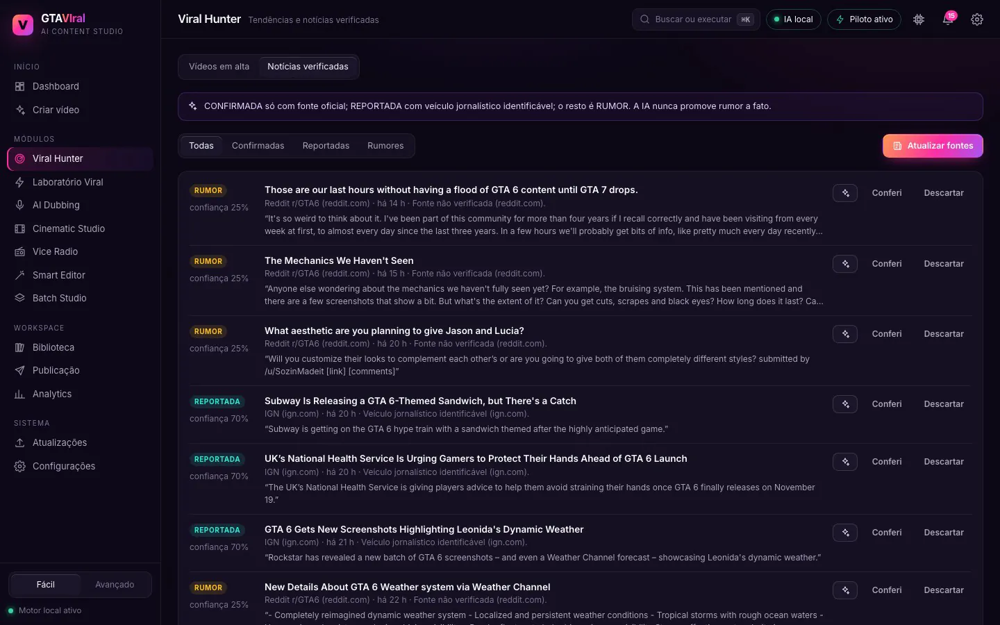
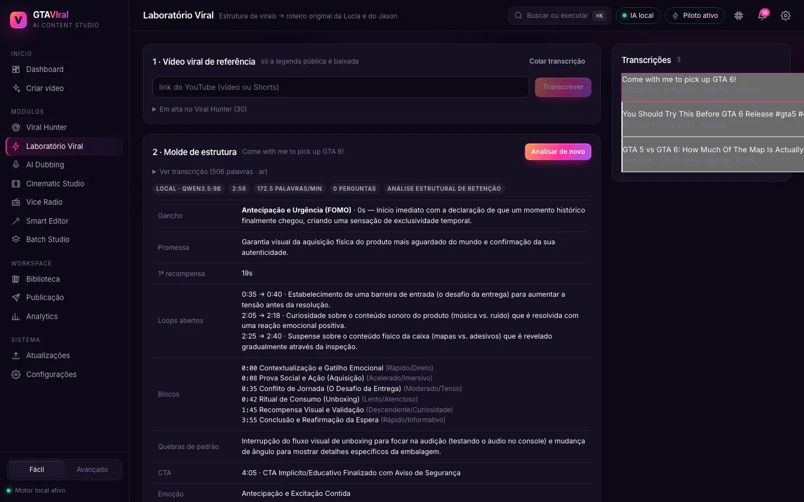
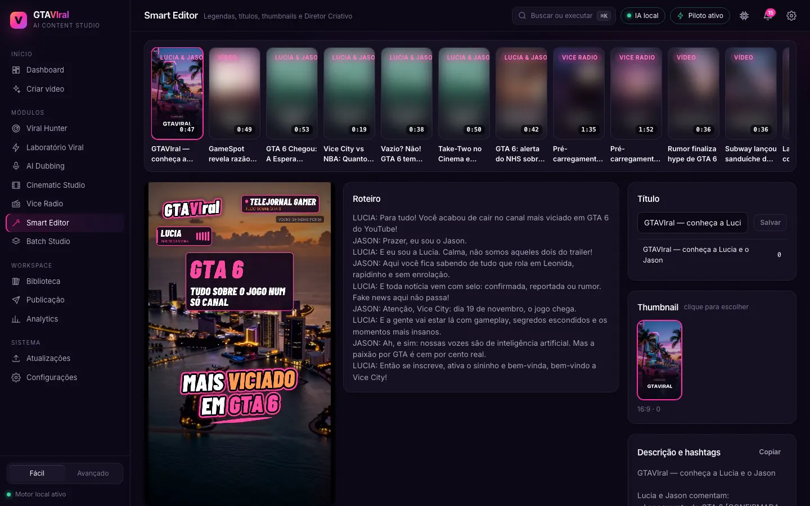

Software para criadores
Crie vídeos sobre GTA VI. Sem precisar virar editor.
Encontre notícias em alta, gere narrações com Lucia e Jason e produza vídeos em português com inteligência artificial.
- R$ 47,90pagamento único
- Maccom chip Apple (M1+)
- Windows10 e 11 (64 bits)
Demonstração
Da notícia ao vídeo pronto. Sem montagem.
Tudo o que aparece é o aplicativo de verdade. Miniaturas de vídeos de outros canais estão desfocadas.



Como funciona
Três passos. Você só revisa.
- 01
Escolha a pauta
O app junta as notícias de GTA VI do dia e mostra o que é confirmado, o que a imprensa reportou e o que ainda é rumor.
- 02
O GTAVIral produz
Escreve o roteiro, grava as vozes, corta as cenas da sua biblioteca, coloca as legendas animadas e monta a capa.
- 03
Você revisa e posta
O vídeo sai em 9:16 ou 16:9, com legenda pronta. Você posta, ou deixa o assistente Claude postar por você no navegador.
Roda no seu Mac, sem custo
- Edição, cortes, legendas animadas e capa
- Vozes locais (mais simples que as premium)
- Busca de notícias e biblioteca de cenas
Serviços de fora, opcionais
- Gemini, para os roteiros: chave grátis do Google
- ElevenLabs, para vozes humanas: plano pago
- Claude, para postar sozinho: plano pago
Lucia & Jason
Os apresentadores do seu canal.
Ela provoca, ele confere a fonte. Os dois conversam como gente, fazem graça e sempre voltam para a notícia.
- Reels, Shorts e TikTok na vertical; vídeos longos para o YouTube
- Vozes humanas com a ElevenLabs, ou vozes grátis no seu Mac
- Cada notícia com o selo Confirmada Reportada Rumor
- Chamada no final em rodízio, como “manda VIRAL no direct”
Lucia e Jason são personagens de IA do GTAVIral e não representam personagens do jogo.
Funcionalidades
O que vem no GTAVIral
Tudo no mesmo aplicativo, sem planilha nem editor de vídeo separado.
Ver o preço- Viral Hunter
- Mostra o que está bombando sobre GTA VI e quais notícias têm fonte confiável.
- Laboratório Viral
- Pega um vídeo gringo em alta e aprende o ritmo dele. O roteiro sai novo, em português, e o app bloqueia trechos copiados.
- Lucia & Jason
- Telejornal com dois apresentadores, efeitos de rádio, cards de notícia e chamada final.
- Vice Captions
- Legendas animadas palavra por palavra, longe dos botões do TikTok e do Reels.
- Piloto automático
- Você diz quantos vídeos longos e curtos quer por dia. Se faltar notícia, o app avisa em vez de inventar.
- Outros formatos
- Notícia narrada, estilo cinematográfico e Vice Radio, com locutora. Dá para misturar.
- Capa e legenda prontas
- Título, capa, legenda com fontes e hashtags. No YouTube, capítulos na descrição.
- Instalação simples
- Um comando instala tudo, o mesmo comando atualiza, e um guia em PDF explica cada passo.
Oferta
GTAVIral completo
R$47,90
Pagamento único. Sem mensalidade do GTAVIral.
- O aplicativo com todos os recursos desta página
- Guia em PDF, do zero ao primeiro Reel publicado
- Correções e melhorias da versão comprada
- Sem chave de ativação e sem limite de computadores
Pagamento pela Kiwify. Depois da compra você recebe o guia e o comando de instalação.
Antes de comprar, confira
| Computador | Mac com chip Apple (M1 ou mais novo) ou Windows 10/11 de 64 bits. 15 GB livres; 16 GB de memória recomendado. |
|---|---|
| Instalação | Um comando no Terminal (Mac) ou no PowerShell (Windows). O guia mostra cada passo. |
| Custos opcionais | ElevenLabs (vozes humanas) e Claude (postagem automática) são planos pagos, contratados por você. Sem eles, o app funciona com vozes locais e postagem manual. |
| Imagens dos vídeos | Suas gravações de gameplay ou imagens próprias. Usar trailers oficiais é uma opção pessoal, desligada por padrão. |
Dúvidas e suporte
Perguntas frequentes
Não achou sua resposta? Os canais de suporte ficam no rodapé.
Preciso saber editar vídeo?
Não. Você escolhe a pauta e o formato; o app faz roteiro, vozes, cortes, legendas e capa. Você só revisa.
É difícil instalar?
Não. Você cola um comando no Terminal do Mac e ele instala tudo, conferindo cada arquivo. O guia em PDF mostra cada passo.
Tenho que pagar alguma IA?
Não é obrigatório. O roteiro usa o Gemini com a chave grátis do Google e as vozes podem ser locais. Para vozes humanas como as da demonstração, você contrata a ElevenLabs. O app mostra quanto você gastou e respeita um teto mensal.
Ele posta sozinho no Instagram?
O vídeo sai pronto, com capa e legenda. Você pode postar manualmente ou usar o assistente Claude (plano pago da Anthropic) para postar pelo navegador. A resposta automática “manda VIRAL no direct” é configurada no próprio Instagram, de graça.
Funciona no Windows?
Sim. Windows 10 e 11 de 64 bits. A instalação é um comando no PowerShell, explicado no guia. Sem placa de vídeo NVIDIA o app funciona normalmente, só renderiza um pouco mais devagar.
Posso usar vídeos de outros canais?
Vídeos virais servem de referência de estrutura e de pauta. O roteiro é sempre novo e o app bloqueia trechos copiados. Para cortes e dublagens, use material próprio ou autorizado.
As notícias são confiáveis?
Cada notícia mostra a fonte e um selo: Confirmada (fonte oficial), Reportada (imprensa) ou Rumor. O app não transforma rumor em fato.
O GTAVIral garante views ou dinheiro?
Não. Ele facilita a produção. O resultado depende do conteúdo, do público e das plataformas.